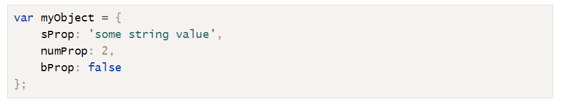

Objects
- Object literal is a comma-separated list of name-value pairs wrapped in curly braces. Object literals encapsulate data, enclosing it in a tidy package. This minimizes the use of global variables which can cause problems when combining code. 
JSON
Mathematical Objects
- The
Math.abs()method returns the absolute value of a number. - The
Math.ceil()method will round a number up to the next integer. - The
Math.floor()method will round a number down to the next integer. - The
Math.round()method will round a number to the nearest integer. - The
Math.truc()method will return the integer part of a number. (ES6) - The
Math.exp()method will raise a number to the power of Euler's constant. - The
Math.pow()method will raise any number to the power of another number. - The
Math.sqrt()method returns the positive square root of a number. - The
Math.cbrt()method returns the cube root of a number. (ES6) - The
Math.hypot()method returns the square root of the sum of the squares of all its arguments. It can be used to calculate the hypotenuse of a right-angled triangle. (ES6) - The
Math.max()method returns the maximum number from its arguments. - The
Math.min()method returns the minimum number from the given arguments. - The
Mathobject has the standard trigonometric functions. All angles are measured in radians for these functions. - The
Math.random()method is used to create random numbers.